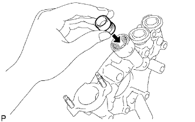
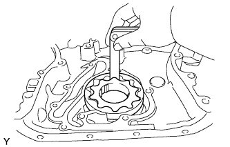
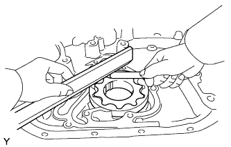
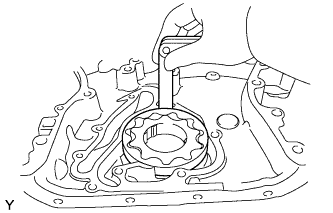

Oil Pump Assembly (2GR-FE) Inspection |
| 1. Inspect Oil Pump Relief Valve |
Apply engine oil to the oil pump relief valve.
 |
Insert the oil pump relief valve into the valve installation hole of the oil pump cover and check that it falls smoothly under its own weight.
| 2. Inspect Oil Pump Rotor Set |
Apply engine oil to the oil pump rotor set.
 |
Install the oil pump rotor set to the timing chain (belt) cover with the marks facing the oil pump cover side, and check that the rotors turn smoothly.
Tip Clearance Inspection
 |
Using a feeler gauge, measure the clearance between the driven rotor and drive rotor.
Side Clearance Inspection
 |
Using a precision straightedge and feeler gauge, measure the clearance between the oil pump rotor set and timing chain (belt) cover.
Body Clearance Inspection
 |
Using a feeler gauge, measure the clearance between the driven rotor and chain cover.